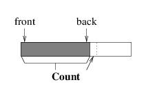
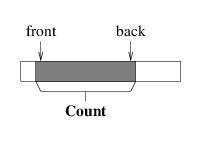
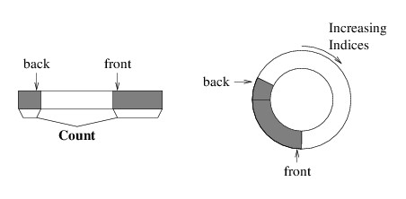
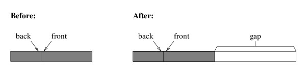
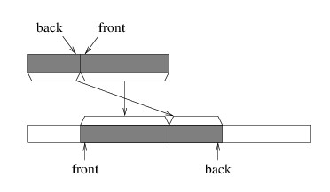

Implementing a Queue
We will approach the implementation of a queue much like we did the implementation of a stack - we will use part of an array to store the elements, and create a larger array as needed. However, efficiently implementing a stack is easier because we only need to access one end of a stack, but we need to access both ends of a queue. Suppose, for example, that we were to use the initial part of the array, as we did for a stack; i.e.:

This implementation works well as long as we are only enqueuing elements — each element is placed at the back, much like pushing an element onto a stack. However, consider what happens when we dequeue an element. The element is easy to locate, as it must be at index 0, but in order to maintain the above picture, we would need to move all of the remaining elements one location to the left. This becomes less efficient as the number of elements in the queue increases.
One alternative is to modify the picture somewhat:

We can maintain this picture more efficiently, as there is now no need to move the elements when we dequeue an element. It does mean that we need to keep track of a bit more information, namely, the location of either the front or the back, in addition to the Count (note that we can compute the other end from these two values). But a more serious problem remains. Notice that as we enqueue and dequeue elements, the portion of the array that we are using works its way to the right. Eventually, the back element will be the last element in the array. However, this doesn’t mean that we are using the entire array, as the front can be anywhere in the array.
To solve this problem, when we need to enqueue an element but the back element is in the last array location, we place the next element at index 0. It is as if we are imagining the array as being circular, as the next location after the last is back at the beginning. The following picture gives two views of such a “circular array” implementation:

With this implementation, we only need to construct a larger array if we completely fill the current array, and unless we need to do this, we don’t need to move elements around. We need the following class members in order to keep track of everything:
- a private T?[ ] field in which to store the elements;
- a public int Count property; and
- a private int field giving the index of the element at the front of the queue (if the queue is empty, this can be any valid index).
Let us now consider how we would implement Enqueue. We first need to determine whether the array is full by comparing the Count with the size of the array. If it is full, we need to construct a new array of twice the size, as we did for both the StringBuilder implementation and the stack implementation. However, we can’t simply copy the entire array to the beginning of the new array, as we did for these other two implementations. To do so would leave a gap in the middle of the queue, as shown in the following illustration:

While there are several ways of copying the elements correctly, it may be helpful to copy in such a way that the index of the front of the queue remains unchanged; i.e., we copy as follows:

In order to copy the elements like this, we can use the static method, Array.Copy. This method takes the following parameters:
- The array to copy from.
- An int giving the index of the first element to copy.
- The array to copy to.
- An int giving the index in which to place the first element.
- An int giving the number of elements to copy.
Just figuring out how to fill in these parameters takes some work. Let’s first consider the part that begins with the front of the queue. The index of the first element to copy is the index of the front of the queue, which we have in a private field. We want to place this element at the same index in the new array. In order to compute the number of elements to copy, first observe that we know the number of elements in the original array (we can use either the Count property or the length of this array, as these values are equal whenever we need a larger array). To get the number of elements we want to copy, we can subtract from this value the number of elements we are not copying — i.e., the number of elements preceding the index of the front of the queue. The number of elements preceding any index i is always i; hence, by subtracting the index of the front of the queue from the Count, we get the number of elements we are copying by this call.
Now let’s see if we can figure out the parameters for the other call. The first element we want to copy is at index 0. We want to place it immediately following the elements we have already copied. Because the last of these elements occupies the last index of the original array, whose size is currently the same as the Count, the next index is just the Count. The number of elements we want to copy, as we have already argued, is the index of the front of the queue.
Once we have the elements copied to the new array, the hardest part is done. After we do this, we just need to copy the reference to the new array into the array field.
Once we have ensured that there is room in the array to add a new element, we can complete the Enqueue method. We need to place the element at the back of the queue. We can obtain the proper location by adding the Count to the index of the front of the queue, provided this value is not beyond the end of the array. If it is, then we need to wrap it around by subtracting the length of the array. We can then increment the number of elements, and we are (finally) done.
The Peek method is straightforward — after verifying that the queue is nonempty, we simply return the element at the front. The Dequeue method isn’t much more difficult. We can obtain the element we want to return using the Peek method. We then need to place the default element of type T at the front, and update both the index of the front of the queue and the Count before returning the element we obtained ealier from Peek. The only slightly tricky part is making sure that when we update the index of the front of the queue, we don’t go outside of the array. If we do, we need to wrap it back around to 0.